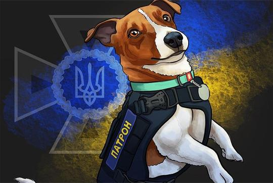

Хто це патрончик?
Пес Патрон (нар. 20 липня 2019, Чернігів) — український собака-винюхувач вибухівки, талісман Державної служби з надзвичайних ситуацій,[3][4] який здобув велику популярність за часів повномасштабної російсько-української війни. Офіційний символ Міжнародного координаційного центру з питань гуманітарного розмінування[5], сформованого при Міністерстві внутрішніх справ. За даними ДСНС, до 19 березня 2022 року Патрон допоміг виявити понад 90 вибухових пристроїв, встановлених російськими військами[6].
У 2020 році[7] керівник піротехнічної групи управління ДСНС по Чернігівській області Михайло Ільєв придбав собаку в колеги[8] і подарував своєму сину[9][10]. Спочатку йому хотіли дати кличку Куля, але завважили її невдалою[9]. Патрон почав нести службу у ДСНС у віці 6 місяців,[11] до квітня 2022 року йому виповнилося 2,5 роки[12]. Пес важить приблизно 4 кілограми, що дозволяє використовувати його для робіт по виявленню протипіхотних мін, до яких дозволяється залучати тварин вагою до п'яти кілограмів.